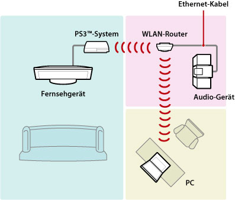
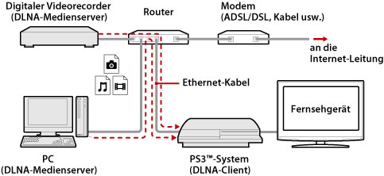
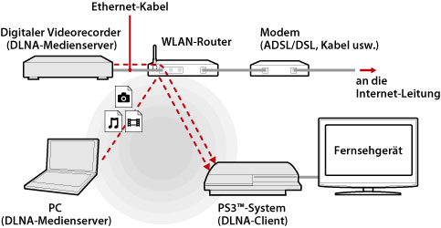
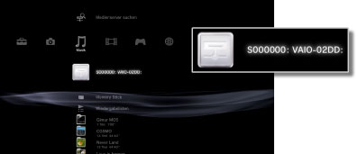
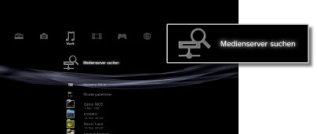

Einstellungen > Netzwerk-Einstellungen > Verbindung mit dem Medienserver
Verbindung mit dem Medienserver
Nehmen Sie Einstellungen für die Verbindung mit Geräten vor, die DLNA unterstützen.
| Aktivieren | Aktiviert Verbindungen mit Geräten, die DLNA unterstützen. |
|---|---|
| Deaktivieren | Deaktiviert Verbindungen mit Geräten, die DLNA unterstützen. |
Über DLNA
DLNA (Digital Living Network Alliance) ist ein Standard, der digitalen Geräten wie PCs, digitalen Videorecordern und Fernsehgeräten die Verbindung mit einem Netzwerk und die gemeinsame Nutzung von Daten auf anderen angeschlossenen, DLNA-kompatiblen Geräten ermöglicht.
DLNA-kompatible Geräte haben zwei unterschiedliche Funktionen. „Server“ dienen dazu, Medien wie Bild- und Musikdaten oder Videodateien zu verteilen, und „Clients“ dienen zum Empfangen und Wiedergeben der Medien. Einige Geräte erfüllen beide Funktionen. Mit einem PS3™-System als Client können Sie Bilder anzeigen bzw. Musik- oder Videodateien wiedergeben, die über ein Netzwerk auf einem Gerät mit DLNA-Medienserverfunktion gespeichert sind.

Verbinden des PS3™-Systems mit dem DLNA-Medienserver
Verbinden Sie das PS3™-System mit einem Netzwerkkabel oder einer drahtlosen Verbindung mit dem DLNA-Medienserver.
Beispiel für Verbindung mit einem PC über ein Netzwerkkabel

Beispiel für Verbindung mit einem PC über eine drahtlose Verbindung

Einrichten eines DLNA-Medienservers
Einen DLNA-Server so einrichten, dass er vom PS3™ System verwendet werden kann. Die folgenden Geräte können als DLNA-Medienserver verwendet werden.
- Geräte, die den DLNA-Standard unterstützen, einschließlich Produkten von anderen Herstellern als Sony
- Personal Computer (PCs) mit installiertem Windows Media Player 11
Bei Verwenden eines AV-Geräts als DLNA-Medienserver
Aktivieren Sie die DLNA-Medienserverfunktion des angeschlossenen Geräts, um den Inhalt freizugeben. Das Setup-Verfahren hängt vom angeschlossenen Gerät ab. Näheres dazu finden Sie in den mit dem Gerät gelieferten Anweisungen.
Bei Verwenden eines Microsoft Windows PCs als DLNA-Medienserver
Ein Microsoft Windows PC kann über die Funktionen von Windows Media Player 11 als DLNA-Medienserver verwendet werden.
1. |
Windows Media Player 11 starten. |
|---|---|
2. |
Wählen von [Media Sharing] aus dem Menü [Library]. |
3. |
[Share media] anklicken. |
4. |
Aus der Geräteliste unter dem Kontrollkästchen [Share media] die Geräte wählen, mit denen Sie Daten austauschen wollen, und dann [Erlauben] wählen. |
5. |
[O. K.] wählen. |
Anmerkungen
- Windows Media Player 11 ist keine standardmäßige Einrichtung eines Microsoft Windows PC. Laden Sie den Installationsassistenten von der Microsoft-Website herunter, um Windows Media Player 11 zu installieren.
- Nähere Informationen zur Verwendung von Windows Media Player 11 siehe Hilfefunktion des Windows Media Player 11.
- In manchen Fällen ist die Originalsoftware des DLNA-Medienservers auf dem PC installiert. Näheres dazu finden Sie in den mit dem Computer gelieferten Anweisungen.
Wiedergabe des DLNA-Medienserverinhalts
Wenn Sie das PS3™-System einschalten, werden DLNA-Medienserver im gleichen Netzwerk automatisch erkannt und Icons der erkannten Server werden unter  (Foto), (Musik) und
(Foto), (Musik) und  (Video) eingeblendet.
(Video) eingeblendet.
1. |
Wählen Sie das Icon des DLNA-Medienservers, zu dem Sie eine Verbindung herstellen wollen, unter  |
|---|---|
2. |
Wählen Sie die Datei, die Sie wiedergeben wollen. |
Anmerkungen
- Das PS3™-System muss mit einem Netzwerk verbunden werden. Einzelheiten zu Netzwerk-Einstellungen finden Sie unter
 (Einstellungen) >
(Einstellungen) >  (Netzwerk-Einstellungen) > [Internetverbindungs-Einstellungen] in diesem Handbuch.
(Netzwerk-Einstellungen) > [Internetverbindungs-Einstellungen] in diesem Handbuch. - Wenn das Verfahren zum Zuteilen von IP-Adressen in den Einstellungen der Netzwerkumgebung von „AutoIP“ in „DHCP“ geändert wurde, suchen Sie unter
 (Medienserver suchen) erneut nach Servern.
(Medienserver suchen) erneut nach Servern. - Das Icon für den DLNA-Medienserver wird nur angezeigt, wenn [Verbindung mit dem Medienserver] unter (Einstellungen) > (Netzwerk-Einstellungen) aktiviert ist.
- Die eingeblendeten Ordnerbezeichnungen hängen vom DLNA-Medienserver ab.
- Je nach dem DLNA-Medienserver können einige Dateien nicht wiedergegeben werden oder die während der Wiedergabe ausführbaren Funktionen sind eingeschränkt.
- Sie können keine kopiergeschützten Inhalte wiedergeben.
- Dateibezeichnungen von auf Servern gespeicherten Daten, die nicht mit DLNA kompatibel sind, haben möglicherweise ein Sternchen an der Dateibezeichnung. In einigen Fällen können diese Dateien nicht mit dem PS3™ System wiedergegeben werden. Auch wenn die Dateien mit dem PS3™ System wiedergegeben werden können, ist es vielleicht nicht möglich, die Dateien auf anderen Geräten wiederzugeben.
- Für die Wiedergabe von Videoinhalten müssen Sie das System (Serie CECH-4200 oder höher) unter Umständen mit einem HDMI-Kabel anschließen.
Manuelle Suche nach DLNA-Medienservern
Sie können im gleichen Netzwerk eine Suche nach DLNA-Medienservern starten. Verwenden Sie diese Funktion, falls bei eingeschaltetem PS3™-System kein DLNA-Medienserver erkannt wird.
Wählen Sie (Medienserver suchen) unter (Foto), (Musik) oder (Video). Wenn die Suchergebnisse angezeigt werden und Sie in das XMB™-Menü zurückkehren, wird eine Liste von DLNA-Medienservern, mit denen eine Verbindung aufgebaut werden kann, eingeblendet.

Anmerkung
(Medienserver suchen) wird nur angezeigt, wenn [Verbindung mit dem Medienserver] in (Netzwerk-Einstellungen) unter (Einstellungen) aktiviert ist.